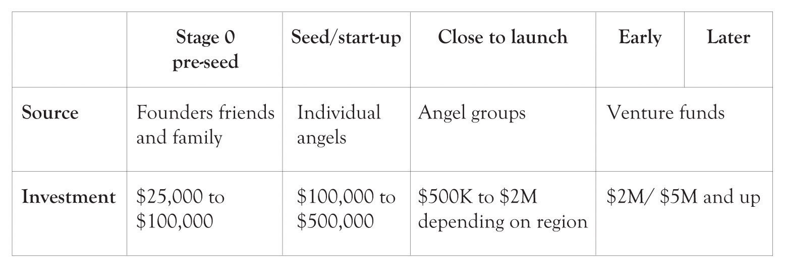
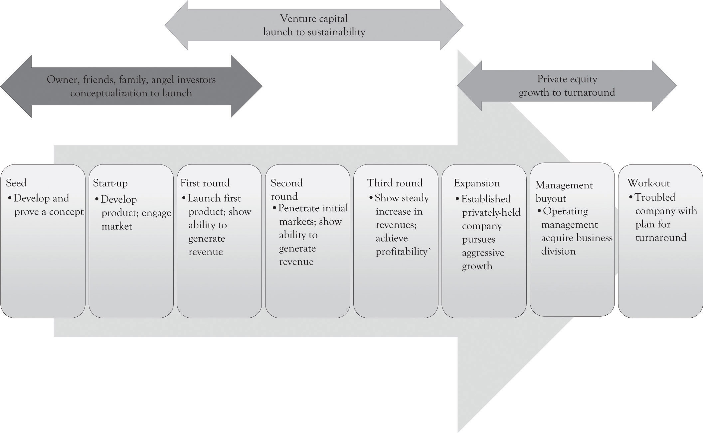

Investors invest in people and then they investigate the idea.Sahlman (1997, July-August). This is true even when your investors are your family and friends and when economic times are challenging. Superstars in music, cinema, and in baseball garner the accolades and ultimately the money because of their above-average expertise. Music and movie publishers and baseball general managers go to the superstars because they are a known commodity and have a track record for delivering hits. This is also true for start-ups. The investors look at the management team, the CIO, the VP’s of marketing, operations, and finance, and the lawyers in terms of their reputation, education, job history, and previous experiences with start-ups.
Many start-ups have difficulty in getting funds.See the following Web sites for an overview of funding issues and general entrepreneurial concepts: http://www.sba.gov/, http://www.entrepreneur.com/, http://www.nvca.org/ There are a variety of avenues for generating additional funds that do not involve the professional investors. The first search for funds usually includes savings, credit cards, home equity loans, bank loans, and selling equity to family, friends, and selling personal assets. Bootstrapping is the process of starting a business from scratch with little or no outside capital. The goal of bootstrapping is to minimize expenditures and to reinvest the cash flow generated by the start-up back into the business.
Figure 12.1 "Typical Amount of Funds Generated During Business Development" illustrates the typical level of funds that can be generated as the business grows.Applegate, Simpson, White, and McDonald (2010). Figure 12.2 "Funds Generation as Firm Grows" presents additional detail on where funds are generated as the business grows.Applegate et al. (2010).
Figure 12.1 Typical Amount of Funds Generated During Business Development
Figure 12.2 Funds Generation as Firm Grows
Here is a list of additional sources of funding to keep the business going as it grows and that the entrepreneur can turn to in lieu of professionally managed funds.
Sources of funds and their timing depend on the economic context, the type of business, and the capabilities and attitudes of the founders, and these figures reflect averages and processes that are forever changing.